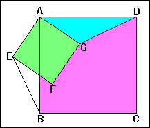

|
In the right figure ,ABCD and AEFG are squares. (1) The angle BAG=a . Find angle DAG . (2) Find the triangle which is congruent with the triangle AGD . (3) Find the side whose length is equal to DG. |
 |
How to use this applet.1. Drag the red point on the corner of the small square to move it . 2. Press "Define" button to go to next step . 3. Check the radio buttons to select the center point of the rotation . 4. Drag the red point of the triangle to rotate it . 5. Drag the red point on the center of the large square to move whole figure . |
|
Drag red point |